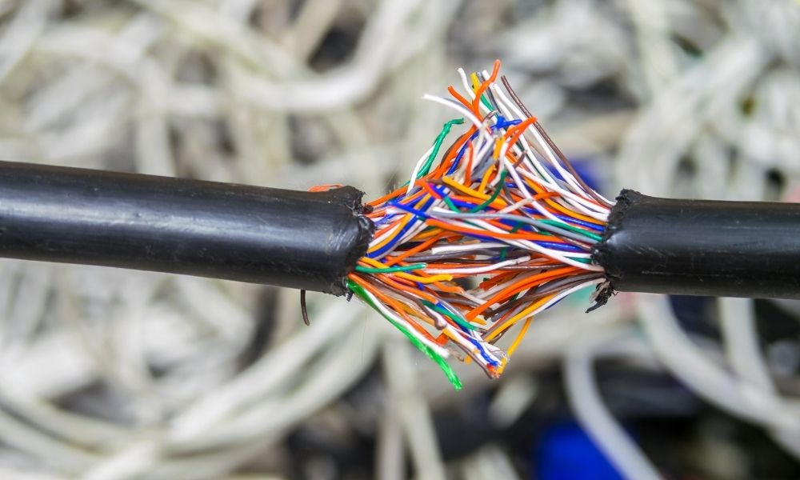
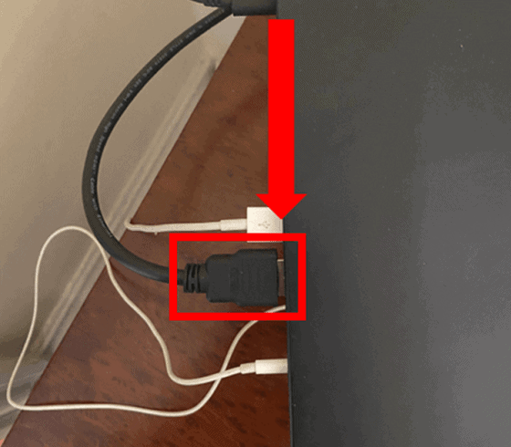
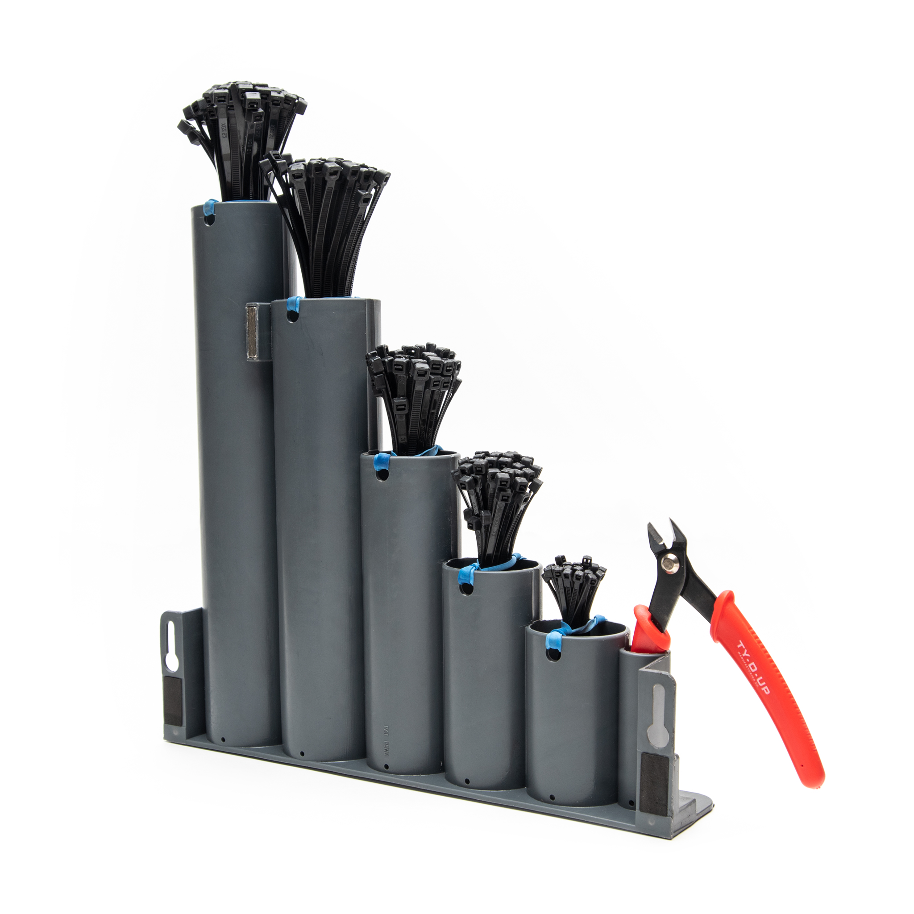

Cable issues can disrupt your workflow and device functionality. Follow these steps to troubleshoot common cable-related problems:
1. Power Cable Issues
Inspect the connector: Ensure the power cable is firmly plugged into both the laptop and the power outlet. If the connector is loose, check for debris or damage on the plug and port.
Replace the adapter: If the connector is worn out or bent, you might need to replace the charger or the adapter cable.
Secure with electrical tape: Temporarily, you can use electrical tape to hold the plug in place if it's slightly loose.

2. Loose Display Cable (for Screen Flickering/Disconnection)
Professional repair: If you're not experienced with hardware, it's best to take the laptop to a repair center to have the cable inspected and tightened.

3. Cable Tie or Organizer
Use cable organizers: To prevent external cables (such as power or peripheral cables) from loosening due to movement, you can use cable ties or cable management clips to secure the cables in place and reduce strain on the connectors.

Regularly check your cables for damage, ensure they are properly connected, and use cable management solutions to keep everything in order. For more detailed instructions, refer to the troubleshooting guide provided.